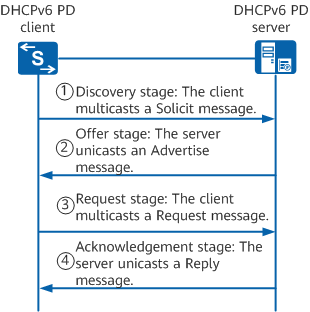
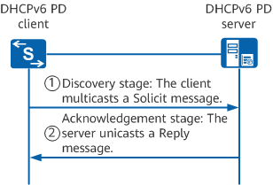
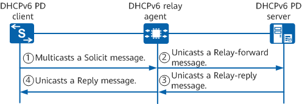

On a hierarchical network, IPv6 addresses are generally configured manually, which has poor extensibility and is not beneficial for uniform IPv6 address planning and management.
The DHCPv6 PD mechanism allows a downstream device to request IPv6 address prefixes from the upstream device and an upstream device to allocate appropriate prefixes to the downstream device. In this way, you do not need to configure IPv6 address prefixes for user-side links on the downstream device. The downstream device divides the obtained prefix (which is typically less than 64 bits long) into subnet segments with 64-bit prefixes and sends an RA message on the link that IPv6 hosts directly connect to. This enables IPv6 hosts to automatically configure IPv6 addresses, implementing hierarchical address deployment.
The following describes how a DHCPv6 PD server allocates an IPv6 address prefix to a DHCPv6 PD client when a DHCPv6 relay agent exists or not.
A DHCPv6 PD server can allocate an IPv6 address prefix to a DHCPv6 PD client in DHCPv6 four- or two-message exchange mode.
DHCPv6 four-message exchange
The DHCPv6 four-message exchange is used when multiple DHCPv6 PD servers exist on the network.

Discovery stage. The DHCPv6 PD client multicasts a Solicit message to discover DHCPv6 PD servers and requests them to allocate an IPv6 address prefix.
Offer stage. Each DHCPv6 PD server unicasts an Advertise message to the DHCPv6 PD client, notifying the client of the IPv6 address prefixes that can be allocated.
Request stage. If multiple DHCPv6 PD servers send Advertise messages to the DHCPv6 PD client, the client selects the Advertise message from the server with the highest priority based on parameters such as the server priorities in the Advertise messages (if the server priorities are the same, the client selects the Advertise message that carries the required configuration parameters) and multicasts a Request message to the server, requesting the server to allocate an IPv6 address prefix.
DHCPv6 two-message exchange
The DHCPv6 two-message exchange is used when only one DHCPv6 PD server exists on the network. In the DHCPv6 two-message exchange, a DHCPv6 PD client receives only an IPv6 address prefix allocated by a DHCPv6 PD server. Therefore, the DHCPv6 two-message exchange does not need to go through the offer and request stages in the DHCPv6 four-message exchange.
The DHCPv6 two-message exchange is used only when a Solicit message sent by the DHCPv6 PD client carries the Rapid Commit option (indicating that the client expects the server to quickly allocate address prefixes) and the DHCPv6 PD server supports fast address prefix allocation. In other cases, the DHCPv6 four-message exchange is used.

Discovery stage. The DHCPv6 PD client multicasts a Solicit message to discover DHCPv6 PD servers and requests them to allocate an IPv6 address prefix.
Acknowledgment stage. After receiving the Solicit message carrying the Rapid Commit option, the DHCPv6 PD server that supports fast address prefix allocation selects an available IPv6 address prefix and unicasts a Reply message to the client, acknowledging that the IPv6 address prefix is assigned to the client.
When a DHCPv6 relay agent exists, a DHCPv6 PD server can also allocate an IPv6 address prefix to a DHCPv6 PD client in DHCPv6 four- or two-message exchange mode. The working principles of the two modes are the same as those when no DHCPv6 relay agent exists. For details, see DHCPv6 PD Server Allocating an IPv6 Address Prefix to a DHCPv6 PD Client When a DHCPv6 Relay Agent Does Not Exist. The following uses the DHCPv6 two-message exchange as an example.
